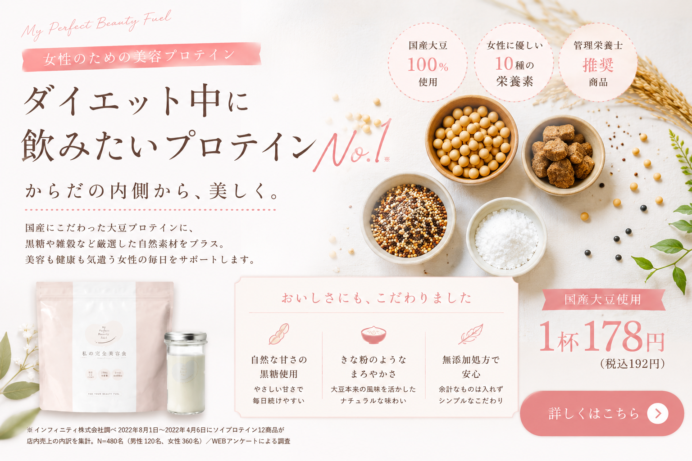
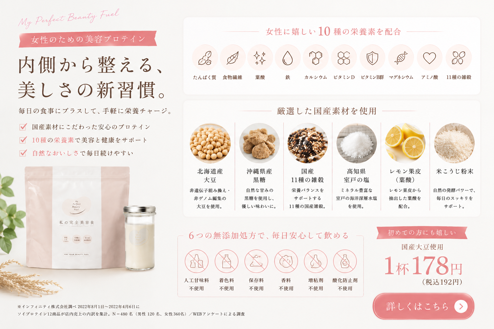
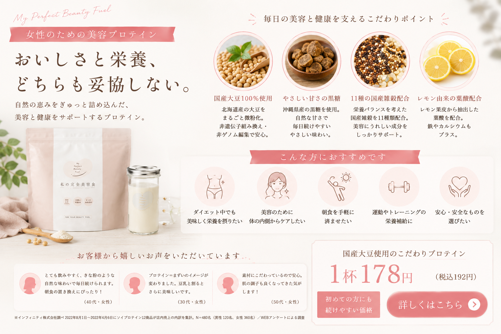
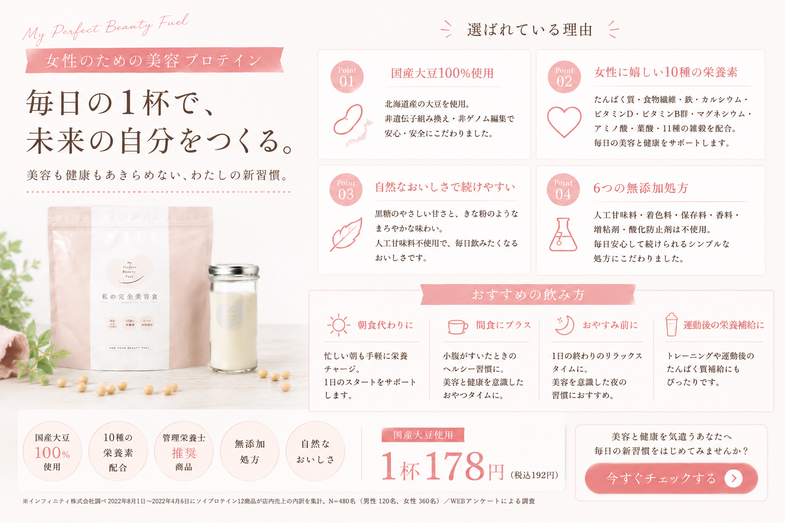
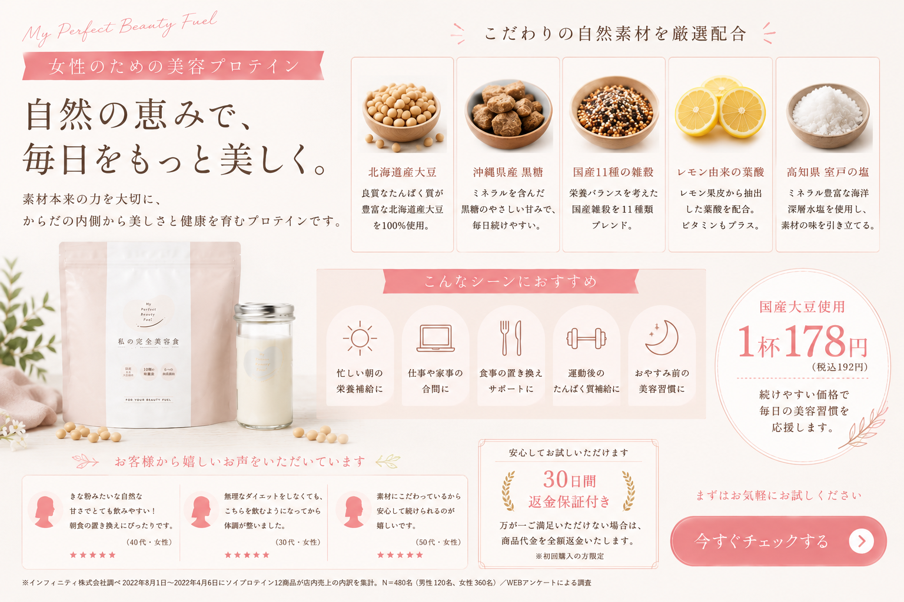

忙しい毎日でも、 美容も健康も大切にしたい。 そんな女性たちから、 今“美容プロテイン”への注目が高まっています。 中でも人気なのが、 国産素材へこだわった 「私の完全美容食」。 北海道産大豆、 沖縄黒糖、 国産雑穀など、 自然素材を中心に作られた、 女性のためのソイプロテインです。


最近では、 美容や健康を意識する女性を中心に、 プロテイン人気が急上昇しています。 以前までプロテインといえば、 筋トレやボディメイクをする男性向け、 というイメージを持つ方も少なくありませんでした。 しかし現在では、 “美容習慣” “朝食代わり” “置き換え” “インナーケア” といった目的で、 女性向けプロテインを取り入れる方が増えています。
特に30代・40代・50代になると、 食生活の乱れや栄養不足、 美容への悩みを感じる女性も増えてきます。 そのため、 不足しがちな栄養を手軽に補える美容プロテインへの注目が高まっています。

「私の完全美容食」が人気を集める理由の一つが、 国産素材へのこだわりです。 主原料となる大豆は、 北海道産の非遺伝子組み換え・非ゲノム編集大豆を使用。 さらに、 沖縄の黒糖、 室戸の塩、 国産雑穀など、 素材そのものへ強くこだわっています。
最近では、 “何を食べるか” だけでなく、 “どんな素材なのか” を重視する女性も増えています。 そうしたナチュラル志向・無添加志向とも、 非常に相性が良いプロテインです。
プロテインに対して、 「味が苦手」 「人工的な甘さが気になる」 「飲みにくい」 そんなイメージを持っている方も少なくありません。 しかし、 最近の女性向け美容プロテインは、 “おいしさ” を重視した商品が非常に増えています。
人工的な甘さではなく、 自然でやさしい味わい。 きな粉風味に近い感覚で楽しめます。
牛乳だけでなく、 豆乳割りも人気。 朝食代わりにも取り入れやすいです。

美容や健康は、 短期間ではなく、 毎日の積み重ねが大切です。 そのため、 “続けやすさ” は非常に重要なポイントになります。 私の完全美容食は、 自然な味わいと飲みやすさから、 毎日続けやすい美容プロテインとして支持されています。
最近では、 40代・50代女性からの人気も高まっています。 年齢とともに、 食生活や美容、 健康への意識が変わる中で、 “無理をしない美容習慣” を求める方が増えているためです。
特に、 忙しい朝の栄養補給や、 置き換え習慣として取り入れる方も増えています。

また、 人工甘味料などを極力使用しない自然派設計も、 大人女性から支持される理由のひとつです。
国産素材へこだわった、 女性のための美容プロテイン。 無理なく、 自然に、 毎日の暮らしへ取り入れてみませんか？